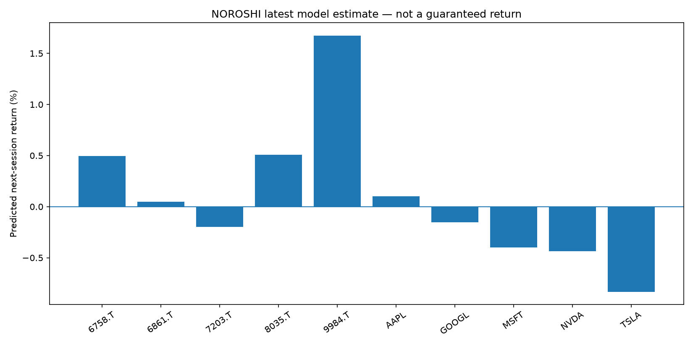
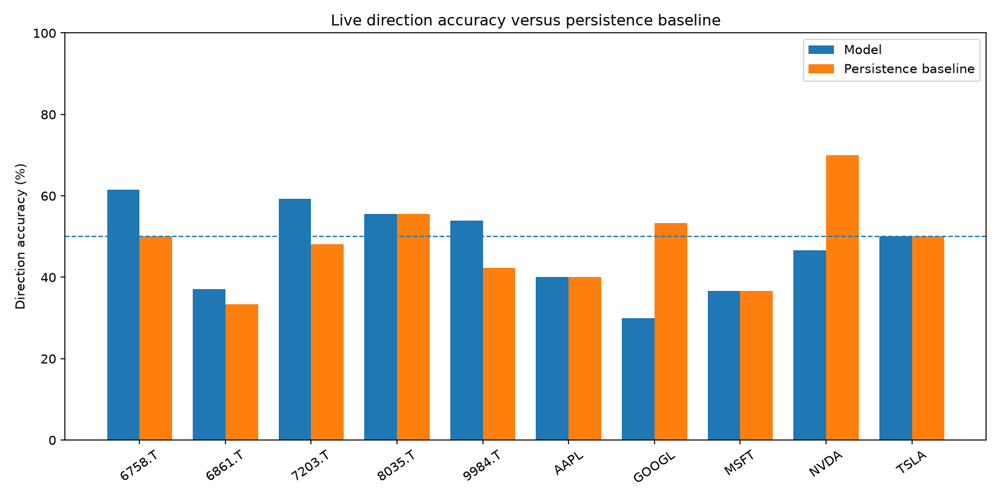

NOROSHI Auditable Forecast Dashboard
次営業日終値方向の研究用予測。売買の自動執行や利益保証は行いません。
システム状態
正常
生成日時 UTC
2026-10-12T18:58:37.556577Z
市場データ基準日
2026-10-09
有効予測
10
Walk-forward方向精度
49.5%
baseline 50.0%直近90日Live方向精度
45.5%
244件 / baseline 47.1%状態と注意
- 現在、重大な警告はありません。
Confidenceは過去の的中率ではありません。 今回の判定に対するモデルのクラス確率です。実際の精度はWalk-forward検証と、保存後に確定したLive実績で別に測定します。
30件未満のLive評価は暫定値であり、対外的な精度主張には使いません。
最新予測
| 銘柄 | 基準日 | 終値 | 予測値 | 予測騰落 | 方向 | 上昇確率 | Confidence | 時系列検証 | 品質 | 研究Signal |
|---|---|---|---|---|---|---|---|---|---|---|
| 6758.T ソニーグループ | 2026-10-09 | ¥3,814 | ¥3,817 | +0.09% | 強気 | 55.8% | 55.8% モデル確率 | 52.0% baseline 53.5% | CAUTION | HOLD |
| 6861.T キーエンス | 2026-10-09 | ¥80,540 | ¥80,641 | +0.12% | 強気 | 53.8% | 53.8% モデル確率 | 53.5% baseline 48.5% | PASS | HOLD |
| 7203.T トヨタ自動車 | 2026-10-09 | ¥2,910 | ¥2,912 | +0.05% | 強気 | 51.1% | 51.1% モデル確率 | 47.5% baseline 52.5% | CAUTION | HOLD |
| 8035.T 東京エレクトロン | 2026-10-09 | ¥12,445 | ¥12,408 | -0.30% | 弱気 | 42.5% | 57.5% モデル確率 | 49.5% baseline 47.5% | CAUTION | HOLD |
| 9984.T ソフトバンクグループ | 2026-10-09 | ¥5,803 | ¥5,782 | -0.36% | 弱気 | 35.5% | 64.5% モデル確率 | 47.5% baseline 48.0% | CAUTION | HOLD |
| AAPL Apple | 2026-10-09 | $336.64 | $337.38 | +0.22% | 強気 | 59.9% | 59.9% モデル確率 | 50.0% baseline 46.0% | PASS | HOLD |
| GOOGL Alphabet | 2026-10-09 | $351.66 | $352.53 | +0.25% | 強気 | 61.8% | 61.8% モデル確率 | 49.0% baseline 49.0% | CAUTION | HOLD |
| MSFT Microsoft | 2026-10-09 | $535.07 | $534.29 | -0.14% | 弱気 | 47.8% | 52.2% モデル確率 | 44.5% baseline 50.5% | CAUTION | HOLD |
| NVDA NVIDIA | 2026-10-09 | $229.28 | $229.55 | +0.12% | 強気 | 50.9% | 50.9% モデル確率 | 48.5% baseline 53.5% | CAUTION | HOLD |
| TSLA Tesla | 2026-10-09 | $382.70 | $383.01 | +0.08% | 強気 | 50.1% | 50.1% モデル確率 | 52.5% baseline 51.0% | PASS | HOLD |
予測チャート

精度とbaseline

Live実績（銘柄別）
| 銘柄 | 確定件数 | 方向精度 | baseline | 差 | Return MAE |
|---|---|---|---|---|---|
| 6758.T | 23 | 56.5% | 43.5% | +13.0pt | 1.25% |
| 6861.T | 23 | 39.1% | 39.1% | +0.0pt | 1.06% |
| 7203.T | 23 | 60.9% | 39.1% | +21.7pt | 1.06% |
| 8035.T | 23 | 52.2% | 56.5% | -4.3pt | 5.98% |
| 9984.T | 22 | 50.0% | 45.5% | +4.5pt | 4.42% |
| AAPL | 26 | 34.6% | 38.5% | -3.8pt | 1.09% |
| GOOGL | 26 | 30.8% | 53.8% | -23.1pt | 1.26% |
| MSFT | 26 | 34.6% | 34.6% | +0.0pt | 1.26% |
| NVDA | 26 | 50.0% | 73.1% | -23.1pt | 1.20% |
| TSLA | 26 | 50.0% | 46.2% | +3.8pt | 1.82% |
データ鮮度
| Ticker | 市場 | 最終日 | 取得元 | 状態 | 経過日 | エラー |
|---|---|---|---|---|---|---|
| AAPL | US | 2026-10-09 | download | fresh | 3 | |
| GOOGL | US | 2026-10-09 | download | fresh | 3 | |
| MSFT | US | 2026-10-09 | download | fresh | 3 | |
| NVDA | US | 2026-10-09 | download | fresh | 3 | |
| TSLA | US | 2026-10-09 | download | fresh | 3 | |
| 7203.T | JP | 2026-10-09 | download | fresh | 4 | |
| 6758.T | JP | 2026-10-09 | download | fresh | 4 | |
| 9984.T | JP | 2026-10-09 | download | fresh | 4 | |
| 6861.T | JP | 2026-10-09 | download | fresh | 4 | |
| 8035.T | JP | 2026-10-09 | download | fresh | 4 |
評価方法
毎回、最新OHLCVを取得し、未完了セッションを除外してからLightGBM分類器・回帰器を再学習します。モデル内部評価には、未来データを訓練側へ混ぜないexpanding TimeSeriesSplitと1期間のgapを使います。
実運用評価は、変更不能なschema-v2予測を次の完成した市場セッションの終値と後日照合します。2025年11月で停止していた旧キャッシュ由来の予測は集計しません。
機械可読データ: latest_predictions.json / metrics.json / status.json / live_results.json